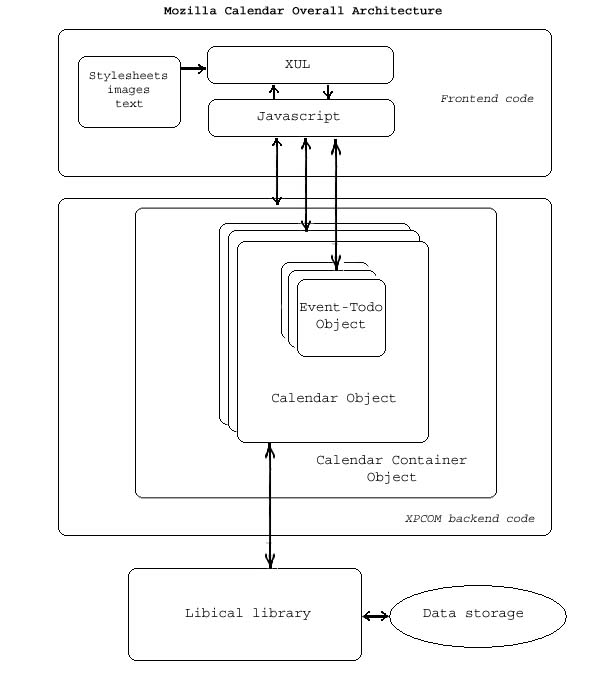

Mozilla Calendar デベロッパーガイド
以下の文書は、カレンダーのコード構造の簡単な説明と、主なディレクトリやファイルの用途を記したものです。 この文書により、 Calendar Project に興味を持った開発者がこのプロジェクトに参加するのを助け、勇気づけることができたらと考えています。
全体の構造
以下の図は、カレンダーの全体構造を示したものです：

ファイルとディレクトリの構造
カレンダーのコードはすべて、 Mozilla のソースディレクトリのルートフォルダから一段下にある、 "calendar" ディレクトリ以下にあります。
このフォルダを見るには、こちらのリンクをクリックしてください： http://lxr.mozilla.org/mozilla/source/calendar
ほとんどのソースコードが保存されているのは、libxpical と resources の両フォルダです。
- libxpical:
RFC2445 規格に基づいてカレンダーを保存したり計算したりするのに、 libical library が使われます。このディレクトリには、その libical library への XPCOM ラッパーを提供する、 C++ で書かれたカレンダーのバックエンドコードがあります。
libical のツリーバージョンは、現在、外部ライブラリへの依存を回避するために使われています。このバージョンの大部分は libical の 0.23 リリースを元にして作られており、そのソースコードはこちらで取得できます： http://lxr.mozilla.org/mozilla/source/other-licenses/libical
また、こちらでは libxpical に含まれるファイルの一覧と、個々のファイルの説明を見ることができます： http://lxr.mozilla.org/mozilla/source/calendar/libxpical 各ファイルへのリンクをたどると、ファイル上部のコメント部分により詳細な説明があります。 - resources:
このディレクトリにはすべてのフロントエンドコードと画像、各地域版およびスタイルシートが含まれます。- resources/content: すべての XUL ファイルと JS ファイルが含まれます。ほとんどのファイルのトップコメント部分には、ファイルの目的とそのファイルによって提供される機能についての説明があります。
- resources/locale: すべてのテキストが含まれます。ローカライズと翻訳を行う人たちだけが扱う必要のあるディレクトリです。
- resources/skin: すべての画像とスタイルシートが含まれます。今のところ、 classic と modern の二つのテーマが含まれています。
カレンダーの仕様
注意： 以下に示す文書は参照用のものです。今のところ、ここに挙げる規格やドラフト仕様が全て実装される予定であるというわけではありません。
- イントロダクション
-
[RFC 3283] "Guide to Internet Calendaring"
(ステータス: 有益な情報)
ftp://ftp.rfc-editor.org/in-notes/rfc3283.txt - iCalendar 標準規格 (iCAL)
-
[RFC 2445] "Internet Calendaring and Scheduling Core Object Specification (iCalendar)"
(ステータス: 標準への提唱)
ftp://ftp.rfc-editor.org/in-notes/rfc2445.txt- XML 構文の草案：
-
[xCAL-drafts] "iCalendar DTD Document (xCAL)"
(ステータス: ワーキングドラフト)
http://ietfreport.isoc.org/idref/draft-ietf-calsch-many-xcal/ - RDF/XML 構文についての注釈：
-
[rdfCAL-notes] RdfCalendarDocumentation
(ステータス: ワーキングノート)
http://esw.w3.org/topic/RdfCalendarDocumentation
- RFC 2445 を含む、 RFC で使われる文法規則
-
[RFC 2234] "Augmented BNF for Syntax Specifications: ABNF"
(ステータス: 標準への提唱)
ftp://ftp.rfc-editor.org/in-notes/rfc2234.txt - カレンダーの予定転送機能 (iTIP) における意味論
-
[RFC 2446] "iCalendar Transport-Independent Interoperability Protocol (iTIP)"
(ステータス: 標準への提唱)
ftp://ftp.rfc-editor.org/in-notes/rfc2446.txt - カレンダーの予定転送機能
-
- Email を介しての転送
-
[RFC 2447] "iCalendar Message-Based Interoperability Protocol (iMIP)"
(ステータス: 標準への提唱)
ftp://ftp.rfc-editor.org/in-notes/rfc2447.txt - インターネットを介しての転送 (BEEP)
-
[CAP-drafts] "Calendar Access Protocol (CAP)"
(ステータス: ワーキングドラフト)
http://ietfreport.isoc.org/idref/draft-ietf-calsch-cap/ - HTTP/WEBDAV を介しての転送
-
[CalDAV-drafts] "Calendar Server Extensions for WebDAV (CalDAV)"
(ステータス: ワーキングドラフト)
http://ietfreport.isoc.org/idref/draft-dusseault-caldav/
Calendar API
この章では、フロントエンド、バックエンド両方の API についての完全な記述を徐々に増やしていく予定です。